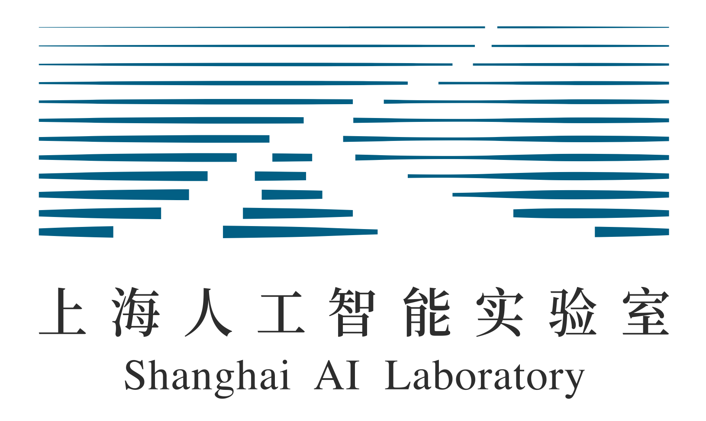

Selected Publications (click to sort: first author / date)
* Equal contribution. # Corresponding author. Representative papers are highlighted.
Yupeng Zhou, Lianghua Huang, Zhifan Wu, Jiabao Wang, Yupeng Shi, Biao Jiang, Daquan Zhou, Yu Liu, Ming-Ming Cheng, Qibin Hou.
arXiv, 2026

paper / project / code
Dual-mode self-evolution for fast autoregressive audio-video character generation.
Yupeng Zhou, Zhen Li, Ziheng Ouyang, Yuming Chen, Ruoyi Du, Daquan Zhou, Bin Fu, Yihao Liu, Peng Gao, Ming-Ming Cheng, Qibin Hou.
ECCV, 2026

paper / code
Joint discrete and continuous optimization for better discrete video VAE training.
Yi Xin, Juncheng Yan, Qi Qin, Zhen Li, Dongyang Liu, Shicheng Li, Victor Shea-Jay Huang, Yupeng Zhou, Renrui Zhang, Le Zhuo, Tiancheng Han, Xiaoqing Sun, Siqi Luo, Mengmeng Wang, Bin Fu, Yuewen Cao, Hongsheng Li, Guangtao Zhai, Xiaohong Liu, Yu Qiao, Peng Gao.
arXiv, 2025

paper / code
Stand-alone decoder-only autoregressive image modeling for high-quality generation and editing.
Xuying Zhang*, Yupeng Zhou*, Kai Wang, Yikai Wang, Zhen Li, Shaohui Jiao, Daquan Zhou, Qibin Hou, Ming-Ming Cheng.
ICCV, 2025

paper / code
Single image to consistent 3D object generation through autoregressive next-view prediction.
Yupeng Zhou, Daquan Zhou, Yaxing Wang, Jiashi Feng, Qibin Hou.
International Journal of Computer Vision, 2025
paper
Training-free conditional masking to improve text-to-image semantic consistency.
Yupeng Zhou, Daquan Zhou, Ming-Ming Cheng, Jiashi Feng, Qibin Hou.
NeurIPS, 2024, (Spotlight)

paper / code
Training-free consistent self-attention for long-range story image and video generation.
Yupeng Zhou, Zhen Li, Chun-Le Guo, Li Liu, Ming-Ming Cheng, Qibin Hou.
IEEE Transactions on Pattern Analysis and Machine Intelligence, 2026

paper / code / project
A closer look at permuted self-attention for efficient image super-resolution.
Yupeng Zhou, Zhen Li, Chun-Le Guo, Song Bai, Ming-Ming Cheng, Qibin Hou.
ICCV, 2023
paper / code / project
Permuted self-attention for efficient and effective image super-resolution.
Experience
|
2025 - 2026 Alibaba Tongyi Lab |
Research InternWanTeam@Alibaba, working on multimodal large models and generative modeling. |
|
 2024 - 2025 Shanghai AI Lab |
Research InternShanghai Artificial Intelligence Laboratory, working on visual generation and multimodal foundation models. |
Education
2018 - 2022, I was an undergraduate student at Shandong University, advised by Prof. Meng Chen.